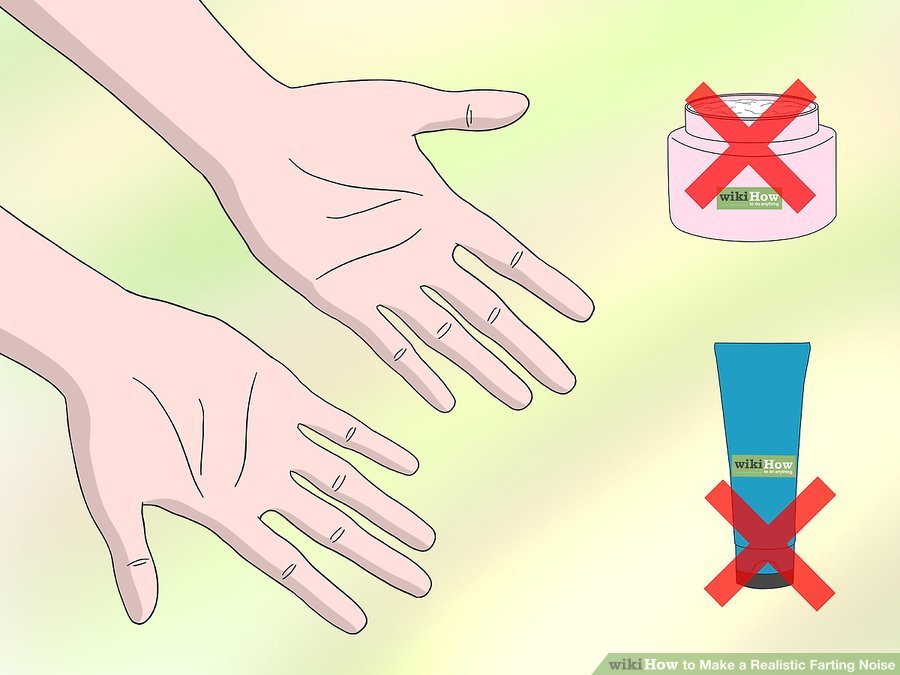

Method 1 of 3: Using Your Hand and Armpit
-

- If you want to do this with a shirt on, the easiest way is with a button down shirt. Just undo one of the buttons a
few down from the collar, so that your can stick your hand through the opening in the shirt. - You don't have to move your arm much for this to work. It should be a small movement, starting with your upper
arm near your side and your forearm across your chest.
1.Make sure your hands are clean. They should be dry as well, with no hand cream or moisturizer.

2.Cup your hand to the opposite arm's armpit. Use your dominant hand. Your fingers should be between your arm
and chest, and your thumb should be on the outside, pointing up.

3.Make a tight seal. Press your hand firmly into your armpit. There should be as tight of a seal as possible between y
our hand and your armpit.

4.Bend your arm. Rotate your shoulder downward, the shoulder of the armpit your hand is in. Do this quickly, while
maintaining the tight seal by pressing upward with your hand.

5.Practice.You probably won't be able to consistently make a realistic farting noise with this technique at first. With p
ractice you'll find the perfect speed and positioning.